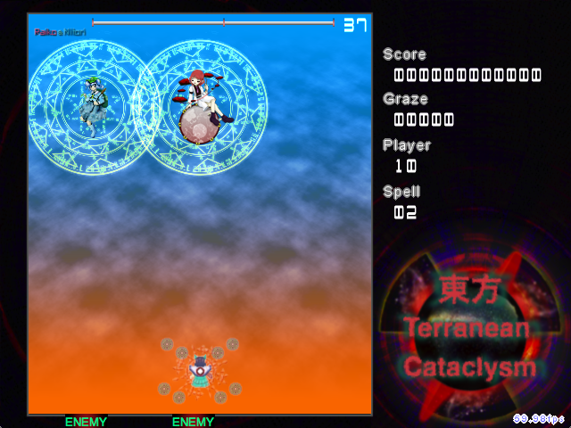

LOCAA 4: DEATH MATCH IN THE SKIES
RELEASE INFORMATION
Release Date: January 12, 2014
Download: Download RC-4 (January 29, 2014)
Install: Place the unarchived directory within the 'script' directory of your copy of Touhou Danmakufu ph3 [.1]
Official Post: Archive MotK (Original Post)
GAMEPLAY AND SYNOPSIS
My LOCAA 4 Contest Entry is a standard Touhou-esque vertical scrolling shooter with two difficulty options.
The main feature of this script is the fact that it is a dual boss battle. Raiko and Nitori do in fact share the same lifebar. There are five nonspells and six spells, featuring both Raiko and Nitori working together to create some interesting danmaku combinations. The script also features a sunset background that is built upon with the bullet styles utilized in the nonspells. The recommended player is my ph3 Kogasa-Utsuho duo.
POSTMORTEM
[November 18, 2015]
My LOCAA 4 Contest entry was my first plural in ph3 and, surprisingly, remains one of my best scripts. It was optimized for one version but had to be re-released twice because Danmakufu was updated to a new version featuring Unicode support. Relatively well balanced, interesting, and quite original, with spins on existing nonspells. However...
The code is... REALLY BAD. People should not attempt to base their systems and code off of this script. Never before have I randomly changed shot sheets in the middle of a script and since this is my first ph3 script, there are probably bugs galore hidden from the naked eye. If you take code from this project, don't blame me if your project breaks for some unknown reason. :p
LEGAL AND CREDITS
The Touhou Project is owned by Team Shanghai Alice (ZUN). Various graphics in this game are not original and originate from official and Touhou Project games.
I do not and will not allow unauthorized redistribution of this game and/or use of original code/assets without express permission.